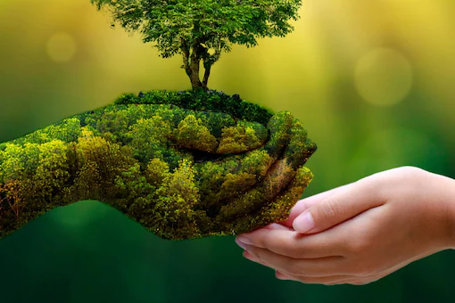

Hello there!
In nature, nothing is perfect and everything is perfect. Trees can be contorted, bent in weird ways, and they’re still beautiful. –Alice Walker
As in 2022, the amount of population has increased by more than 7,943,570,699 and more deaths in years but, if we wont conserve the world then this might be a disasterous issue.
If we will be careless then our next generation has to suffer and maybe the world might come to its end.
If you are reading this, you can share these links to other persons also to make them understand about our future earth.
So is this the end of our planet!?!
No, if we become cautious again and conserve our planet we can extend its life!
Then how?
By surviving by our needs and prevent the wastage of items.
info: If you want to see more what i have created then you can go to the other sections of the page!
